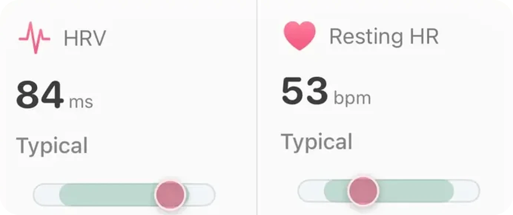

Probléma · Eszközök

Az Aera nem az eszközödet olvassa, hanem az Apple Health-et. Amit az órád, a gyűrűd vagy a pántod az iPhone-on lévő Apple Health-be ír, azt az Aera el tudja magyarázni a saját megszokott szintedhez képest. Ami a gyártó saját appjában marad, azt nem látja.
Ezért nem az a jó kérdés, hogy „működik-e az Aera a márkámmal”, hanem az, hogy a márkád beleírja-e az Apple Health-be azokat az adatokat, amik érdekelnek. Itt megmutatjuk, mit csinál az Aera azzal, ami megérkezik, és mit érdemes ellenőrizni.
Egy őszinte megjegyzés: megnéztük, hogyan kezeli az Aera más eszközök adatait, de Garminnal, Ourával vagy WHOOP-pal még nem próbáltuk ki valódi készüléken. A lenti márkákat tekintsd példának arra, hogyan kell működnie, nem letesztelt kompatibilitási listának.
Hogy egy eszköz mit ír az Apple Health-be, azt a gyártó dönti el, és ez változik. A gyártók saját leírásai és független összehasonlítások alapján, 2026 októberi állapot szerint:
Az Aera csak azt tudja elmagyarázni, ami megérkezik hozzá. Ha egy szám nem jut el az Apple Health-be, nincs mit magyarázni, és az a képernyő üres marad, nem találgat. Nézd meg a gyártód aktuális Apple Health-oldalát, mert ezek a listák az övéi, és változhatnak.
Nem. Az edzések jöhetnek másik eszközről vagy appból. Az alváshoz viszont kell egy hordható eszköz: az iPhone egyedül általában csak az ágyban töltött időt rögzíti, és ha egy éjszakáról egyetlen forrás sem ad alvásadatot, az az éjszaka kimarad. Egy óra, gyűrű vagy alvásapp, ami alvást ír az Apple Health-be, ezt pótolja. Az Apple Watch-app választható társ az élő futásokhoz és az útvonalas navigációhoz.
Aera, iPhone-ra
Az Aera elmagyarázza az órád, a gyűrűd vagy a telefonod gyűjtötte egészségadatokat a saját megszokott szintedhez képest. Minden számnál megmutatja, hogyan jött ki, és minden az iPhone-odon marad: nincs fiók, minden számot a telefonod számol ki. Koppints egy számra, és a Field Guide elmagyarázza. Az Aera nem orvostechnikai eszköz.
Az Aera az Apple Health-et olvassa, a Garmin Connect pedig tud alvást, pulzust és edzéseket írni oda. A Garminból az Apple Health-be jutó edzéseket az Aera beolvassa. Valódi Garmin-fiókkal még nem próbáltuk ki, és a Garmin az edzés GPS-útvonalát nem írja az Apple Health-be.
Mindkettő tud alvást írni az Apple Health-be, az Aera pedig bármelyik forrásból olvassa. A gyártók és független összehasonlítások szerint egyik sem ír oda HRV-t, ezért a HRV hiányozhat. Valódi Oura- vagy WHOOP-fiókkal még nem próbáltuk ki.
Nem. Az edzések jöhetnek más eszközről vagy appból, az Apple Watch-app pedig választható. Az alváshoz kell valamilyen óra, gyűrű vagy alvásapp, ami alvást ír az Apple Health-be, mert az iPhone egyedül általában csak az ágyban töltött időt rögzíti.
Nem. Az Aerában nincs fiók, minden számot az iPhone-od számol ki.
Kapcsolódó útmutató: Garmin-adatok az iPhone-on, érthetően · Összes útmutató